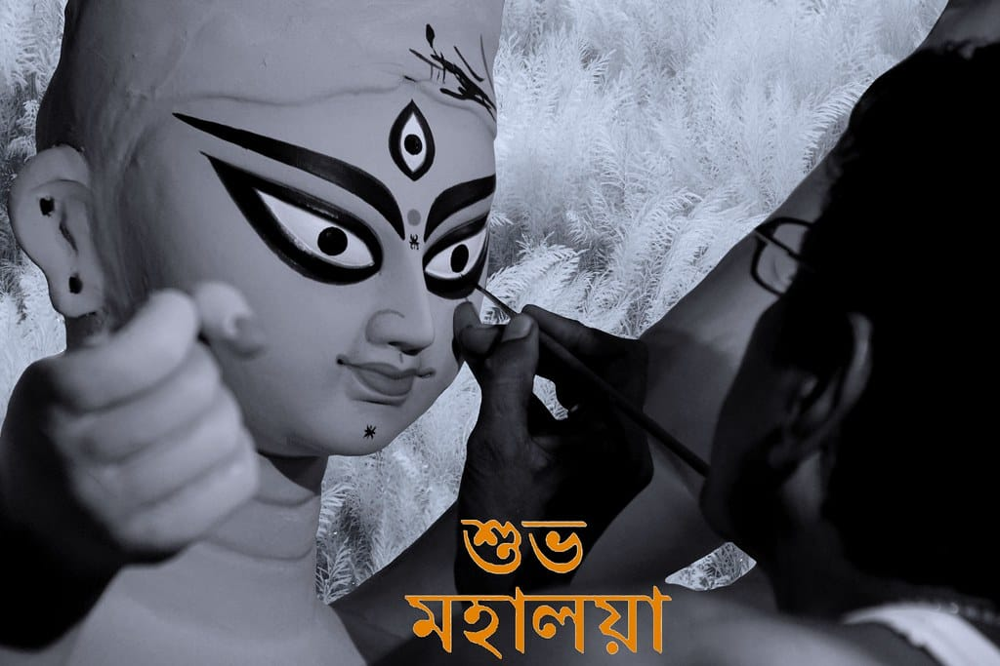
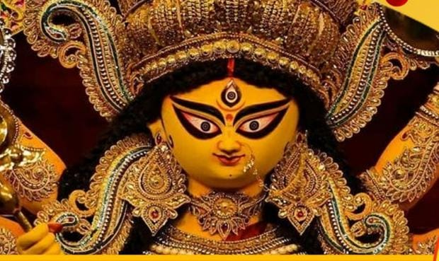
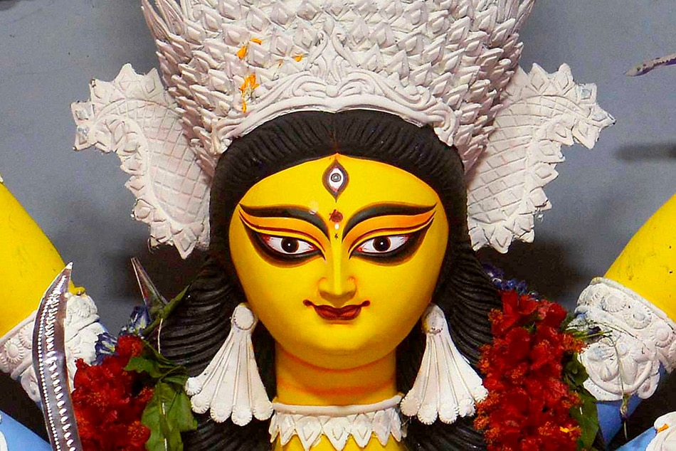
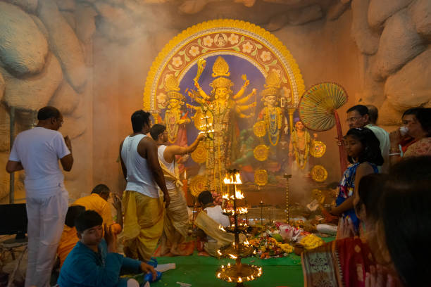

দেবীপক্ষের সূচনা
মহালয়া একটি আনন্দের উপলক্ষ। মহালয়া দেবীপক্ষের সূচনা এবং তৃতীয় পিত্রীপক্ষের সমাপ্তি চিহ্নিত করে।
মানুষ আরও বিশ্বাস করত যে এই দিনে দেবী দুর্গা কৈলাস পর্বত থেকে তার যাত্রা শুরু করেন।
তিনি তার স্বামী এবং বাচ্চাদের সাথে উৎসবের শরতের আবহাওয়া এবং "পুজো পুজো" অনুভূতি নিয়ে মর্তে আসেন
|

|
|

|
শুভ পঞ্চমী
বাঙালির সবথেকে প্রিয় ও এবং অন্তরের উৎসব হলো দূর্গা পূজা । দূর্গা পূজা মূলত ১০ দিনের একটি বিশেষ উৎসব যা উন্মাদনা, উৎসাহ এবং আনন্দে ভরপুর থাকে। তবে দূর্গা পূজার শেষের ছয় দিন অর্থাৎ পঞ্চমী থেকে বিজয়া দশমী পর্যন্তের দিনগুলিতে এই উৎসবের উন্মাদনা ও উৎসাহ অন্য দিনগুলির থেকে একটু বেশিই থাকে। মা দুর্গার আরাধনা, বন্ধুদের সাথে আড্ডা, পরিবারের সাথে সময় কাটানো ও একে অপরকে শুভেচ্ছা জানানোর মাধ্যমে আমরা এই দিন গুলিকে সেলিব্রেট করে থাকি।
|
বোধন
পরম শক্তিকে স্বাগত জানাই।
প্যান্ডেলগুলিতে দেবী স্থাপন করা হয়।
গুরুত্বপূর্ণ আচার-অনুষ্ঠান হল বোধন, আমন্ত্রণ এবং অধিবাস
|

|
|
|
মহাসপ্তমী
সপ্তমীর দিন বা মহাসপ্তমীর সকালে নয়টি গাছ, যার মধ্যে কলা গাছটি সবচেয়ে বেশি দেখা যায়, এক সাথে বেঁধে এবং স্নানের সময় মাথায় কয়েকটি বিল্ব পাতা দিয়ে একটি শ্লোক উচ্চারণ করা হয় যাকে বলা হয় নবপত্রিকা স্নান বা কোলাবউ স্নান
|
মহাঅষ্টমী
দুর্গা অষ্টমীর দিনে, ভক্তরা খুব ভোরে ঘুম থেকে উঠে ফুল, চন্দন, ধুপ, কুমকুমা, ফল ইত্যাদি সহ বিভিন্ন নৈবেদ্য দিয়ে তাকে পূজা করে, ভক্তরা এই দিনে বিভিন্ন দেবী মন্ত্রও জপ করে।
|

|

|
মহানবমী
এই নবম দিন বা শেষ দিনে মহানবী হল দেবী দুর্গার আরাধনার শেষ দিন।এই দিনের অনেক বিভিন্ন নাম আছে । কেউ বলে রাম নবমী আবার কেউ বলে নবরাত্রি।
|
বিজয়া দশমী
এই দিনে দেবী দুর্গার শেষ পূজা ।বিবাহিত মহিলারা প্রতিমাকে মিষ্টি, সিদুর ও অন্যান্য সামগ্রী নিবেদন করেন। যারা সিদুর খেলায় অংশ নেয়, প্রতিমার মুখে সিঁদুর লেপন করে এবং পান, অন্যান্য মিষ্টি এবং সিঁদুর দিয়ে একে অপরকে ছুঁয়ে দেয়।
সমস্ত আচার-অনুষ্ঠান সম্পন্ন হলে আমরা দেবী দুর্গার প্রতিমা নদীতে বিসর্জন করি।
|

|
DEVELOPER
Nabarup Barman
আপনাকে এবং আপনার পরিবার কে জানাই শুভ শারদীয়ার প্রীতি শুভেচ্ছা ও অভিননন্দন -
|
|
Copyright @Nabarup Barman
| | | | | | | |